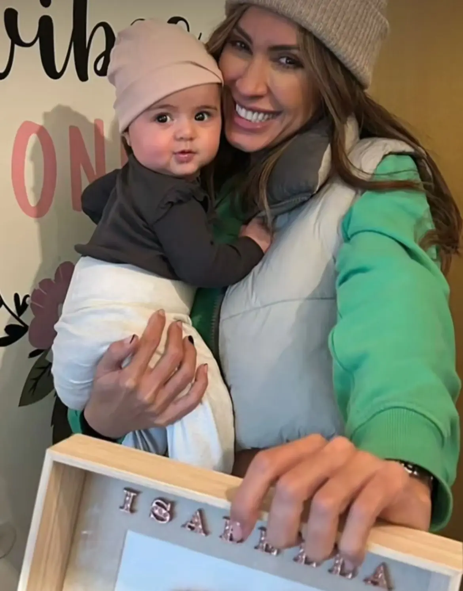
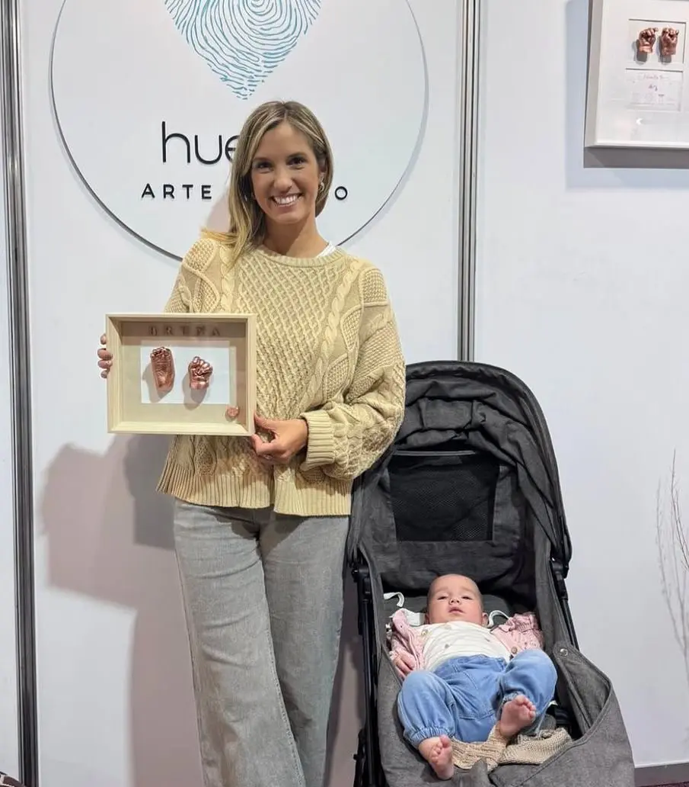

.jpeg)
.webp)
.webp)
.webp)

“Cuando vimos la pieza terminada nos emocionamos muchísimo. Sentimos que habíamos guardado para siempre una etapa tan chiquita y valiosa de nuestro bebé. Es un recuerdo delicado, cálido y lleno de amor.”

En Huellas cada pieza nace de un proceso artesanal, delicado y profundamente personal. Trabajamos cada molde con dedicación para capturar esos detalles únicos que hacen especial a cada etapa de la vida: una pequeña mano, unos pies diminutos, la forma irrepetible de un gesto.
Más que una escultura, cada obra busca transformar un instante en un recuerdo tangible, emotivo y duradero.
Cada trabajo se realiza con atención a los materiales, a la composición y a la presentación final, para que el resultado no solo conserve una huella, sino también la emoción del momento vivido.
Las creaciones de Huellas están pensadas para quienes desean conservar algo más que una imagen. Cada cuadro o escultura guarda una historia: un nacimiento, una familia, una etapa que merece ser recordada.
Nuestro objetivo es que cada pieza transmita calidez, delicadeza y significado.
Cada encargo es único y se trabaja de forma personalizada, cuidando cada decisión estética para lograr un resultado armonioso, elegante y emocional.


“Cuando vimos la pieza terminada nos emocionamos muchísimo. Sentimos que habíamos guardado para siempre una etapa tan chiquita y valiosa de nuestro bebé. Es un recuerdo delicado, cálido y lleno de amor.”

“Lo elegimos para regalar a unos abuelos y fue realmente especial. La terminación es hermosa y se nota el cuidado con el que está hecho. No es solo un regalo: es un recuerdo con muchísimo valor emocional.”
“Desde el primer contacto sentimos mucha calidez. Todo el proceso fue amoroso y cercano, y el resultado superó nuestras expectativas. Tener esa huellita en casa nos conmueve cada vez que la vemos.”
“Buscábamos algo simple pero significativo, y encontramos mucho más que eso. La pieza transmite ternura, memoria y cuidado. Es de esas cosas que sabés que van a acompañar a la familia toda la vida.”
Si querés hacer una consulta, encargar una pieza personalizada o conocer más sobre el proceso, escribinos. Vamos a estar felices de acompañarte en la creación de un recuerdo único.
+598 96 303 052
Montevideo, Uruguay
contacto@huellasarteenyeso.com
@huellasarte.enyeso